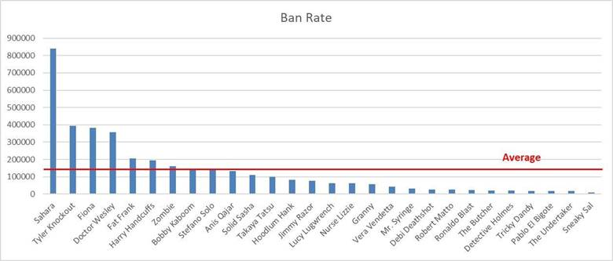

Mafioso Game Analysis
Introduction:
Mafioso is an online turn-based Mobile game in which players battle in 1v1 PVP matches. It is a hero-based game, and players have to choose three heroes for each battle. Each hero has three unique cards with different effects. 2 Ability cards and one special card. There is a mana bar that increases each turn and has a maximum value of 10. Each card consumes a constant amount of mana, and the player's turn ends when they don't have enough mana to use any of their cards. However, for special cards, other than mana, players need to have a full rage bar to be able to use them. Using Special Ability completely empties the rage bar. Rage bar increases each turn, and its refill speed depends on the heroes. Each hero has a specific rage refill ratio. Usually, heroes with lower health bar have a higher rage refill ratio.
In this analysis, we are going to analyze various features of this game and find out whether the game is well balanced or not.
We contacted the game developers, signed an NDA, and were provided with all the information we needed.
Ability Cards Analysis:
First, we analyzed the ability cards and their effects.
Different heroes have different ability cards, so it is not reasonable to
expect the overall damage ratio of all the cards to be in the same range.
Overall, the so-called Tank heroes deal less damage.
What we did was comparing each card's damage with the mana
it consumes and see if the consumed mana required for each card is fair.
For this, we calculated the expected damage ratio for each card, which is
(Damage/Mana), and compared it with the real Damage Ratio.
We didn't consider Special Ability cards here as they are unique and have many
effects other than dealing damage.
Moreover, healing an ally or yourself is considered as the same type as dealing
damage to the enemy.
The results can be seen in figure 1.
As expected, for most of the ability cards, the expected damage ratio and real damage ratio are the same, but there are some exceptions.
Now, we want to analyze each of these cards, to see if they are not well balanced or have some other effects that were not considered in the expected damage ratio.
Figure 1: Expected Damage Ratio and Real Damage Ratio
A) Exceptional
Cards:
1. Hoodlum Hank Ab. 2: Adds 1 mana and orders other allies to attack.
2. Doctor Wesley Ab. 2: Multiplies other heroes' damage by 1.2 and lasts for 2 turns.
3. Tyler Knockout Ab. 2: Increases special ability's damage.
B) Expected
Ratio more than Real Ratio:
1. Takaya Tatsu Ab. 2: Adds 120 health to an ally by reducing 40 health from herself.
2. Tricky Dandy Ab 2: Reduces 30 health from an ally and adds 60 to himself.
3. The Zombie Ab. 2: Deals 100 damage to enemy and 70 to himself.
4. Roberto Matto: Ab. 1:
Multiplies damage by 1.2 if used a second time on the same enemy.
This card seems to be a bit unfair compared to other cards from the same class
of heroes according to the mana it consumes.
C) Real
Ratio more than Expected Ratio:
1. Vera Vendetta Ab. 1: Deals more damage to the enemy that hit her in the previous turn.
2. Jimmy Razor Ab. 2: Deals more damage to enemies with lower health.
3. Takaya Tatsu Ab. 1: Deals more damage if used on the same enemy in the next turn.
4. Doctor Wesley Ab.1: Heals
an ally.
This card seems to be a bit over-powered compared to the mana it uses.
5. Ronaldo Blast Ab. 1: Seems
to be over-powered.
One reason for this can be because this hero is one of the last heroes that are
unlocked.
6. Stefano Solo Ab. 1: Deals
damage to multiple enemies.
This hero has low health, so a higher damage ratio for the same mana compared
to other heroes is legitimate.
7. Jimmy Razor Ab. 1: Deals more damage if used on the same enemy in the next turn.
8. Nurse Lizzie Ab. 2: The damage effect lasts for 2 turns. Deals 0.83 of the initial damage, in the second turn.
9. Debi Deadshot Ab. 1: If an enemy who is marked by this hero attacks in the next turn, Debi shoots her out of turn.
As seen above, although a few cards need some changes to be balanced, overall cards that deal more damage than expected according to the mana it consumes belongs to heroes with lower health and cards that deal less damage than expected belong to Tank heroes. This keeps the overall experience balanced.
Hero Analysis:
Second, in our game analysis, we decided to analyze heroes
and their stats.
As this game has so many special abilities and various features for heroes,
finding a strict measurement method for the hero's overall power is a
sophisticated subject. But we have tried to consider every possible aspect that
differentiates heroes and makes one stronger than the other.
What we expect is all heroes to be in the same power level and have the same
overall hero score, but defiantly this is not going to be the case.
Our measurement elements were hero's cards overall damage summation, hero's health, and hero's rage bar filler multiplier.
We normalized these effects and calculated a number between 0 and 1 for each hero. We have also weighted Health, Damage, and rage differently for more accurate results. Health had the most weight as it is the most important factor. Damage was second, and rage was third.
Figure 2 shows the achieved results:

Figure 2: Overall hero score
As the chart shows, heroes are usually in the same range,
and the chart has a low variance. Usually, heroes that are unlocked later in
the game have a slighter higher overall score. But there are a few exceptions.
Some heroes, unlike the others, are not easy to use and do not deal straight
forward damage and need more practice to master.
For example:
Hoodlum Hank is a special hero and as said before, has an ability card that does not deal damage but increases special ability card's damage.
Fiona deals more damage to female heroes but stuns male heroes.
Bobby Kaboom has a very high damage ratio but cannot damage a single hero and deals damage to all heroes at once.
Ronaldo Blast His cards have a very high damage ratio but might not explode sometimes, which will result in 0 damage dealt to the enemy.
Fat Frank deals more damage if used on the same enemy in the next turn
Note: Pin Head has not been yet released, and this hero might be buffed after a while.
With this told, we will now compare our score with real data that we got from the developers.
Figures below indicate Win Rate, Pick Rate, and Ban Rate for all heroes in all arenas:
Figure 3: Win Rate
Figure 4: Pick Rate

Figure 5: Ban Rate
As figure 3 shows, hero score is a good measurement for the overall superiority of a hero over another but there are few exceptions.
As an example, Anis Qajar is a special
hero that does not have a very high damage ratio but can prevent enemies from
attacking her. Moreover, her special ability increases her ability cards'
damage too.
This hero is very powerful and needs to be nerfed.
Pick rate is not a very good measurement because the arena
highly influences it.
All heroes are not unlocked from the beginning of the game. They are unlocked
as you proceed to higher arenas. Thus, heroes from the first arenas are picked
way more often than the others.
Here is the list of heroes based on their arenas:
Table 1: Heroes and their unlocking Arenas
The unlocking arena has a huge direct effect on pick rate. Initial heroes are selected way more often than the others.
Ban Rate is also not a very accurate measurement because players usually ban most annoying heroes, which might not exactly mean the most powerful heroes, though in some cases, overpowered heroes can be annoying.
As an example, Sahara can disappear and technically become invincible. She also can detonate her bombs all at once whenever she wants, which is really on other players' nerves.
For a more accurate result, we decided to calculate a
weighted average of Win Rate and Pick Rate.
Here are the results:
Figure 6: Weighted Average of win rate and pick rate
The unlocking arena of the heroes still influences this table, but aside from that, the calculated score for heroes is an accurate measurement for a hero's superiority over another.
Upgrade Analysis:
Both heroes and ability cards can be upgraded in this game. They require gold and card parts to be upgraded. Ability Cards can be upgraded up to 15 levels, Special cards up to 10 levels and heroes can be upgraded up to 6 levels.
First, we want to analyze how much the upgrade increases the stats, and then we will analyze the requirements.
The figure below shows Heroes' health increase after each level:

Figure 7: Heroes' Health increase
With each level up, Heroes' health multiply by 1.146383792.
Considering this, Heroes' health on level 6 is going to be approximately twice
their health on level 1.
Stats increase for ability cards, and special cards also
grow the same way as health.
Ability card 1 and 2's damage is multiplied by 1.05, and the special ability
card's damage is multiplied by 1.07885016390642 with each level up.
However, the costs are a completely different story.
For each level up, as said before, you need some cards and
some Gold, and you will also earn some XP, which will level you up.
Figure 4 shows the requirements for level up and XP gained with heroes' level
up:
Figure 8: Hero Upgrade Details
Before going into details, here are the requirements and XP gain with Cards' level up:

Figure 9: Ability 1 Upgrade Details
Figure 10: Ability 2 Upgrade Details
Figure 11: Special Ability Upgrade Details
As can be seen, upgrades' requirements and XP's growth are exponential.
Hero upgrade is a crucial part of level up, so as seen in figure 4, XP grows significantly faster than cards, and players receive more XP by leveling up their heroes than leveling up their cards.
Required Gold skyrockets after level 11 for Ability cards. This is due to some factors that we will open below:
1. Balance between skill and upgrades:
Mafioso is a skill-based game. Players have to learn to play with their heroes
before upgrading them and as an online multiplayer, required skill to play in
higher ranks in better arenas grow exponentially. That is why required Gold and
Cards grow exponentially. This helps players have to practice more with their
heroes before upgrading them.
2. Whales, Dolphins and Minnows:
These are the beating heart of an F2P game.
Players who spend big money, players who rely on their skills but spend when
needed and players who do not spend at all.
To balance these players, encourage whales and yet, make minnows spend a much
higher time in the game, Upgrade requirements' cost rise exponentially.
Conclusion:
Overall, Mafioso is a well-balanced game with complex
special features for each hero, which makes evaluating them more sophisticated
and harder. We tried to consider as many factors as possible in our
calculations and get to the best possible results.
This analysis is in 3 parts and analyzes Ability cards, Heroes, and upgrades.
Ability cards are measured based on dealt damage. Heroes are compared based on
their health, damage, and rage, and upgrades are analyzed by comparing their
cost and the overall stats they increase.
After that on each part we tried to find the reasons behind each chart and
analyze our results to find if there is a reason behind abnormalities of the
charts or the game has flaws.
We found out that the game is a solid experience and players with any taste and
desire can enjoy the game despite the few flaws of the game and upgrade prices
that might seem unreasonable at first look.
We can take this analysis a step further by analyzing the math making system and daily reward system to see whether the matchmaking is balanced or not and to see how long it will take to purchase an upgrade for each item.